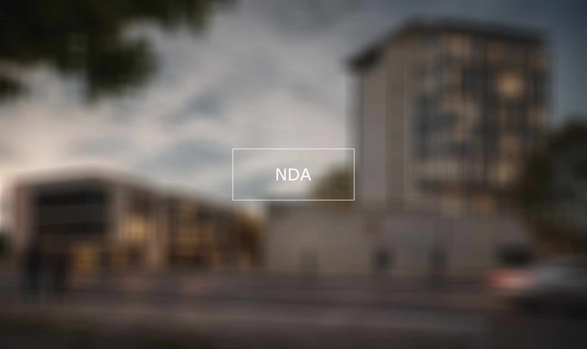

Sviluppo di modello BIM dal preliminare al definitivo — Firenze

BIMOggetto di questa commessa è stato lo sviluppo di un modello BIM già esistente dell'Ex Caserma Lupi, a Firenze, portandolo dal livello preliminare a quello definitivo. La richiesta del cliente era semplice nell'enunciato ma tutt'altro che banale nell'esecuzione: incrementare il livello di dettaglio del progetto integrando nel modello, nell'arco di cinque mesi, il flusso continuo di informazioni e di modifiche progettuali — architettoniche, strutturali e impiantistiche — che si susseguivano durante la lavorazione.
L'incarico presentava diverse criticità, sul piano sia progettuale sia BIM, risolte mano a mano durante la produzione del nuovo modello. Di fatto il lavoro ha comportato una rimodellazione da zero dei due edifici, preservando invece l'interrato di collegamento tra loro, unico elemento mantenuto dal modello di partenza.
La difficoltà maggiore è stata mettere a sistema, in modo efficace e con tempi stretti, le indicazioni provenienti in parallelo dai progettisti architettonici e impiantistici. Proprio per accelerare le fasi più ripetitive — modellazione, messa in tavola e assegnazione dei parametri — ho scritto una serie di script Python realizzati ad hoc per la commessa, che hanno permesso di reggere il ritmo delle revisioni senza sacrificare la coerenza del modello.
Le immagini e gli elaborati di questo progetto non sono divulgabili per accordo di riservatezza (NDA) con il committente. Il contenuto tecnico del lavoro è descritto nel testo qui sopra.